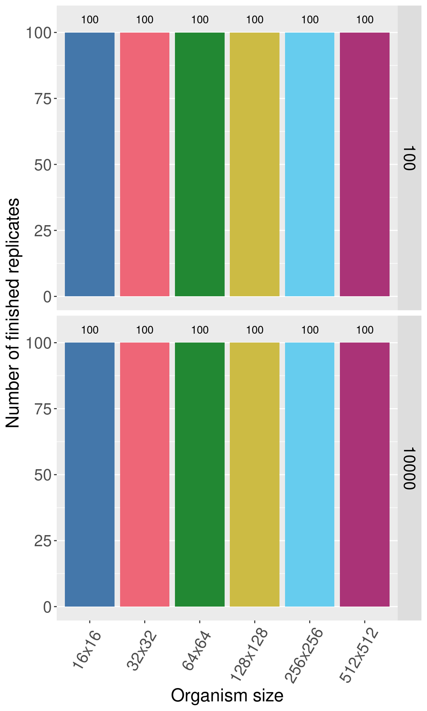
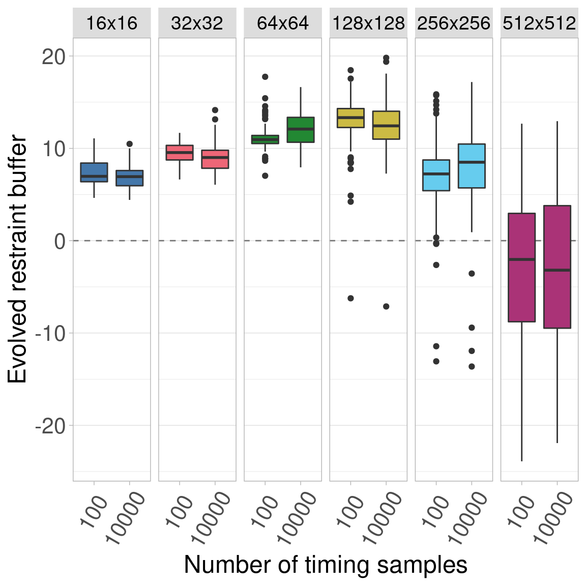

Section 5 Timing sample count experiment
By default, we calculated 100 timing samples for each combination of organism size and restraint buffer value to use for organism fitness in Primordium (a new batch was generated for each experiment). This experiment showed that increasing from 100 samples to 10,000 samples has no qualitative difference on results. This was done by replicating the baseline experiment using 10,000 samples and comparing the results to a fresh run with 100 samples.
5.1 Data cleaning
Load necessary R libraries
Load the data and trim include only the final generation data for sizes 16x16 to 512x512.
# Load the data
df = read.csv('../experiments/2021_02_24__finite_10k_samples/evolution/data/scraped_evolution_data_10k.csv')
df = rbind(df, read.csv('../experiments/2021_02_24__finite_10k_samples/evolution/data/scraped_evolution_data_10k_128.csv'))
df = rbind(df, read.csv('../experiments/2021_02_24__finite_10k_samples/evolution/data/scraped_evolution_data_10k_256.csv'))
df$LENGTH = 100
df = rbind(df, read.csv('../experiments/2021_02_24__finite_10k_samples/evolution/data/scraped_evolution_data_10k_512.csv'))
df = rbind(df, read.csv('../experiments/2021_02_24__finite_10k_samples/evolution/data/scraped_evolution_data_benchmark.csv'))
# Trim off NAs (artifiacts of how we scraped the data) and trim to only have gen 10,000
df2 = df[!is.na(df$MCSIZE) & df$generation == 10000,]
# Ignore data for size 8x8 and 1024x1024
df2 = df2[df2$MCSIZE != 8 & df2$MCSIZE != 1024,]We group and summarize the data to make to ensure all replicates are present.
# Group the data by size and summarize
data_grouped = dplyr::group_by(df2, MCSIZE, SAMPLES)
data_summary = dplyr::summarize(data_grouped, mean_ones = mean(ave_ones), n = dplyr::n())We clean the data and create a few helper variables to make plotting easier.
# Calculate restraint value (x - 60 because genome length is 100 here)
df2$restraint_value = df2$ave_ones - 60
# Make a nice, clean factor for size
df2$size_str = paste0(df2$MCSIZE, 'x', df2$MCSIZE)
df2$size_factor = factor(df2$size_str, levels = c('16x16', '32x32', '64x64', '128x128', '256x256', '512x512', '1024x1024'))
df2$size_factor_reversed = factor(df2$size_str, levels = rev(c('16x16', '32x32', '64x64', '128x128', '256x256', '512x512', '1024x1024')))
data_summary$size_str = paste0(data_summary$MCSIZE, 'x', data_summary$MCSIZE)
data_summary$size_factor = factor(data_summary$size_str, levels = c('16x16', '32x32', '64x64', '128x128', '256x256', '512x512', '1024x1024'))
# Create a map of colors we'll use to plot the different organism sizes
color_vec = as.character(khroma::color('bright')(7))
color_map = c(
'16x16' = color_vec[1],
'32x32' = color_vec[2],
'64x64' = color_vec[3],
'128x128' = color_vec[4],
'256x256' = color_vec[5],
'512x512' = color_vec[6],
'1024x1024' = color_vec[7]
)
# Set the sizes for text in plots
text_major_size = 18
text_minor_size = 16 5.2 Data integrity check
Now we plot the number of finished replicates for each treatment to make sure all data are present. Rows show the number of samples used for fitness. Each bar/color shows a different organism size. 
5.3 Plot
Here we plot all the data. The figure is split into 6 subplots, each showing a different organism size. Inside each subplot, the number of timing samples is shown on the x-axis. 
5.4 Statistics
The plot shows that the general trend, that the evolved restraint buffer initially increases with organism size then decreases, holds true at both sample counts. Furthermore, we see that the evolved buffer values are fairly consistent between the two sample counts.
While we concluded that this was sufficient evidence to use only 100 samples (10,000 is intractable to run for multiple experiments), we include the statistics here. Since we treat each organism size as a group, we simply conduct a Wilcoxon Rank-Sum test between 100 samples and 10,000 samples
## org_size p_value W less_0.01
## 1 16 4.243294e-02 5831.0 FALSE
## 2 32 3.489808e-04 6464.0 TRUE
## 3 64 4.913265e-05 3338.0 TRUE
## 4 128 3.021256e-02 5887.5 FALSE
## 5 256 2.561216e-02 4086.0 FALSE
## 6 512 9.066359e-01 5048.5 FALSE